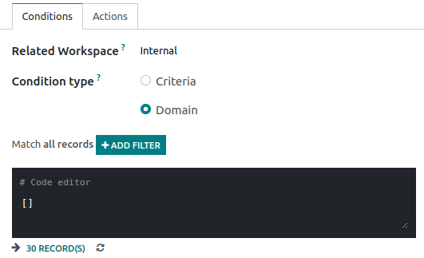

Documents¶
Odoo Documents allows you to store, view and manage files within Odoo.
You can upload any type of file (max 64MB per file on Odoo Online), and organize them in various workspaces.
Configuration¶
By going to , you can enable the centralization of files attached to a specific area of your activity. For example, by ticking Human Resources, your HR documents are automatically available in the HR workspace, while documents related to Payroll are automatically available in the Payroll sub-workspace . You can change the default workspace by using the dropdown menu and edit its properties by clicking the internal link button (➔).

Note
If you enable the centralization of your accounting files and documents, it is necessary to click on Journals and define each journal independently to allow automatic synchronization.

If you select a new workspace, existing documents aren’t moved. Only newly created documents will be found under the new workspace.
Workspaces¶
Workspaces are hierarchical folders having their own set of tags and actions. Default workspaces exist, but you can create your own by going to and clicking on Create.
Note
Workspaces and Sub-workspaces can be created, edited, or deleted by clicking on the gear icon ⚙ on the left menu.
Documents management¶
When clicking on a specific document, the right panel displays different options. On the top, additional options might be available: Download, Share, Replace, Lock or Split. It is also possible to Open chatter or Archive the document.

Then, you can modify the name of your file by clicking on Document. A Contact or an Owner can be assigned. The related Workspace can be modified and it is possible to access the related Journal Entry or to add Tags.
Note
The Contact is the person related to the document and assigned to it. He can only view the document and not modify it. I.e.: an existing supplier in your database is the contact for their bill.
The person who creates a document is, by default Owner of it and has complete rights to the document. It is possible to replace the owner of a document. I.e.: an employee must be owner of a document to be able to see it in “My Profile”.
Finally, different Actions are available at the bottom of the right panel, depending on the workspace where your document is stored.
Workflow actions¶
Workflow actions help you streamline the management of your documents and your overall business operations. These are automated actions that can be created and customized for each workspace. For example, create documents, process bills, sign, organize files, add tags to a file or move it to another workspace with a single click etc. These workflow actions appear on the right panel when it meets the criteria you set.
Create workflow actions¶
To create workflow actions, go to and then click on Create.
Note
An action applies to all Child Workspaces under the Parent Workspace you selected.
Set the conditions¶
You can Create a new Action or edit an existing one. You can define the Action Name and then set the conditions that trigger the appearance of the action button (▶) on the right-side panel when selecting a file.
There are three basic types of conditions you can set:
Tags: you can both use the Contains and Does not contain conditions, meaning the files must have or mustn’t have the tags set here.
Contact: the files must be associated with the contact set here.
Owner: the files must be associated with the owner set here.
Tip
If you don’t set any conditions, the action button appears for all files located inside the selected workspace.
Advanced condition type: domain¶
Important
It is recommended to have some knowledge of Odoo development to properly configure Domain filters.
To access the Domain condition, the developer mode needs to be activated. Once that’s done, select the Domain condition type, and click on Add Filter.
To create a rule, you typically select a field, an operator, and a value. For example, if you want to add a workflow action to all the PDF files inside a workspace, set the field to Mime Type, the operator to contains, and the value to pdf.

Click on Add node (plus-circle icon) and Add branch (ellipsis icon) to add conditions and sub-conditions. You can then specify if your rule should match ALL or ANY conditions. You can also edit the rule directly using the Code editor.

Configure the actions¶
Select the Actions tab to set up your action. You can simultaneously:
Set Contact: add a contact to the file, or replace an existing contact with a new one.
Set Owner: add an owner to the file, or replace an existing owner with a new one.
Move to Workspace: move the file to any workspace.
Create: create one of the following items attached to the file in your database:
Product template: create a product you can edit directly.
Task: create a Project task you can edit directly.
Signature request: create a new Sign template to send out.
Sign directly: create a Sign template to sign directly.
Vendor bill: create a vendor bill using OCR and AI to scrape information from the file content.
Customer invoice: create a customer invoice using OCR and AI to scrape information from the file.
Vendor credit note: create a vendor credit note using OCR and AI to scrape information from the file.
Credit note: create a customer credit note using OCR and AI to scrape information from the file.
Applicant: create a new HR application you can edit directly.
Set Tags: add, remove, and replace any number of tags.
Activities - Mark all as Done: mark all activities linked to the file as done.
Activities - Schedule Activity: create a new activity linked to the file as configured in the action. You can choose to set the activity on the document owner.

Digitize documents with AI and optical character recognition (OCR)¶
Documents available in the Finance workspace can be digitized. Select the document you want to digitize, click on Create Bill, Create Customer Invoice or Create credit note, and then click on Send for Digitization.
See also